As estruturas de repetição, também conhecidas como loops, são recursos essenciais na programação. São elas que permitem que um bloco de código seja executado várias vezes, enquanto uma determinada condição é verdadeira.
A princípio, essa repetição pode ser controlada por um contador, condição lógica ou até mesmo por uma lista de elementos.
As estruturas de repetição são importantes por várias razões, são elas:
As diferenças entre as estruturas de repetição for, while e do...while são que o for é geralmente usado quando
sabemos quantas vezes queremos que o loop seja executado, o while é usado quando queremos repetir um bloco de código
enquanto uma condição é verdadeira e o do...while garante que o bloco de código seja executado pelo menos uma vez.
A estrutura de repetição for é uma das mais utilizadas em programação, ela é usada para executar um bloco de código
repetidamente até que uma condição especificada seja falsa.
Sintaxe da Estrutura for
for (inicialização; condição; incremento) {
// Bloco de código a ser executado enquanto a condição for verdadeira
}O loop começa com a inicialização, a variável. Depois verifica a condição. Em seguida, o bloco de código é executado
se a condição for verdadeira.
Após cada iteração, o incremento (i++) ou decremento (i--) é aplicado.
Exiba os números de 0 a 4:
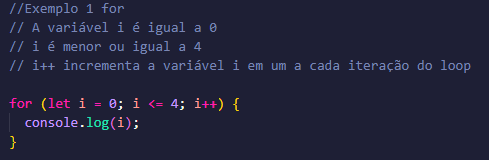Saída:
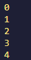Exiba a mensagem "Olá!" 7 vezes:
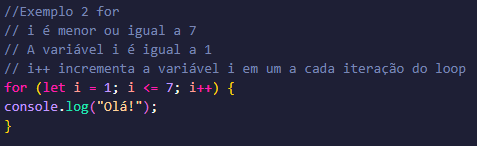Saída:
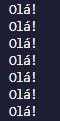Exiba números de 1 a 10:
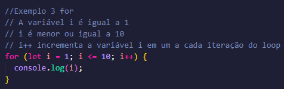Saída:
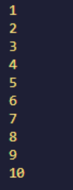Exiba números de 10 até 0 (ordem decrescente):
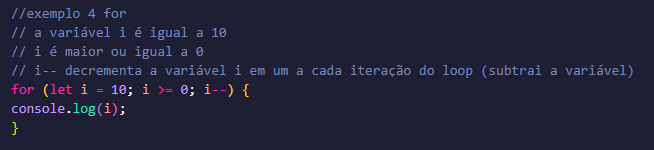Saída:
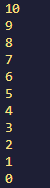Exiba a mensagem "Bom dia" 2 vezes:
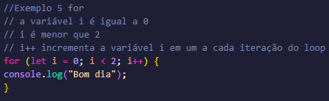Saída:
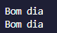O while é uma ferramenta poderosa em Java Script (e na maioria das linguagens de programação) que permite repetir
um bloco de código enquanto uma condição for verdadeira.
É importante garantir que a condição do loop eventualmente se torne falsa para evitar loops infinitos.
Sintaxe da Estrutura while
while (condição) {
// Bloco de código a ser executado enquanto a condição for verdadeira
}O loop começa com a váriavel. Depois, a condição é aplicada a cada iteração. No final, o valor da variável é incrementado dentro do loop até que a condição não seja mais atendida.
Calcule a soma dos números até que o total seja maior que 20:
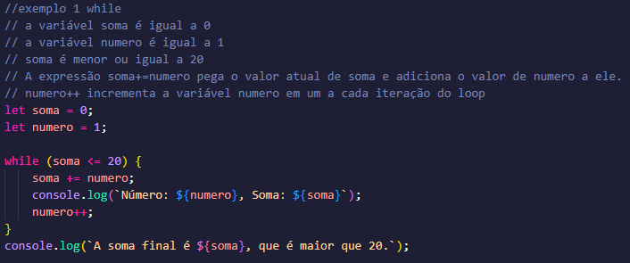Saída:
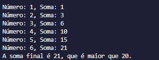Imprima a mensagem "Boa noite" 5 vezes:
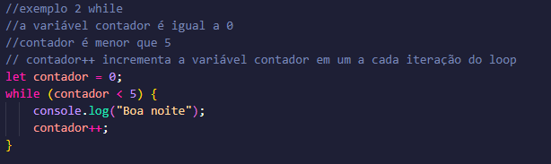Saída:
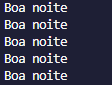Imprima os valores pares entre os números de 0 até 16:
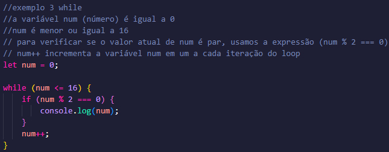Saída:
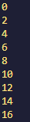Imprima os números de 5 até 1 (ordem decrescente):
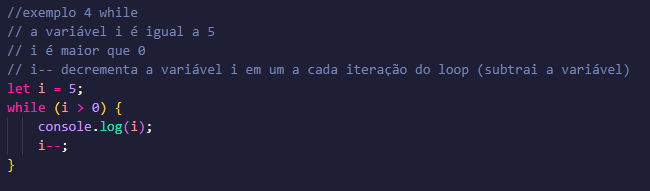Saída:
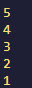Imprima a tabuada do 9:
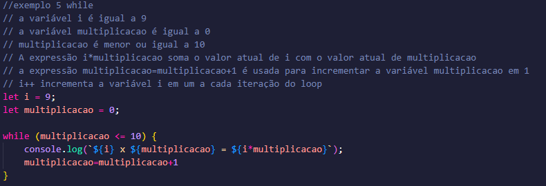Saída:
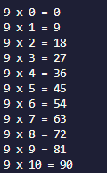A declaração do...while cria um loop que executa uma declaração até que o teste da condição for falsa. A condição
é avaliada depois que o bloco de código é executado, resultando que uma declaração seja executada pelo menos
uma vez.
Sintaxe da Estrutura do...while
do {
// Bloco de código a ser executado
} while (condição);O bloco de código é executado dentro do do uma vez antes de qualquer verificação da condição. Depois, a codição é verificada.
Se for verdadeira, o bloco de código é executado novamente.
Se não for verdadeira, o loop termina.
Faça um código que continue pedindo um valor aleatório até que o número seja maior que 5:
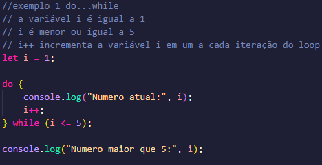Saída:
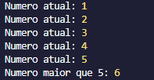Imprima números de 7 a 9:
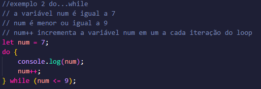Saída:
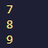Some números até que a soma seja maior que 10:
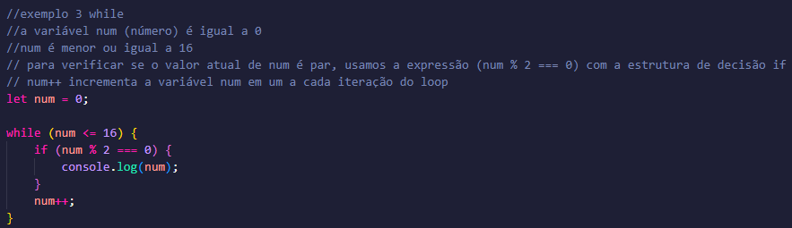Saída:
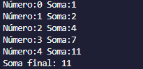Imprima "Desenvolvimento de Sistemas" 5 vezes:
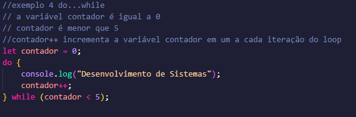Saída:
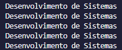Imprima números ímpares de 0 a 20:
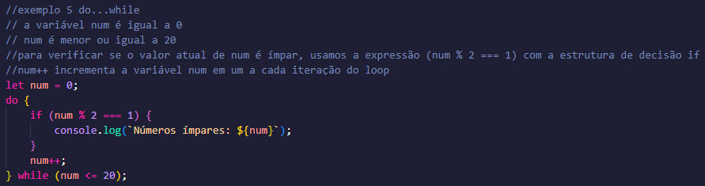Saída:
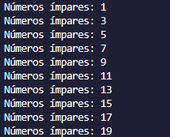For: Calcule a soma dos números de 1 até 50.
While: Calcule a soma dos números até que a soma seja maior que 32.
Do...while: Imprima os valores dos números de 1 até 18